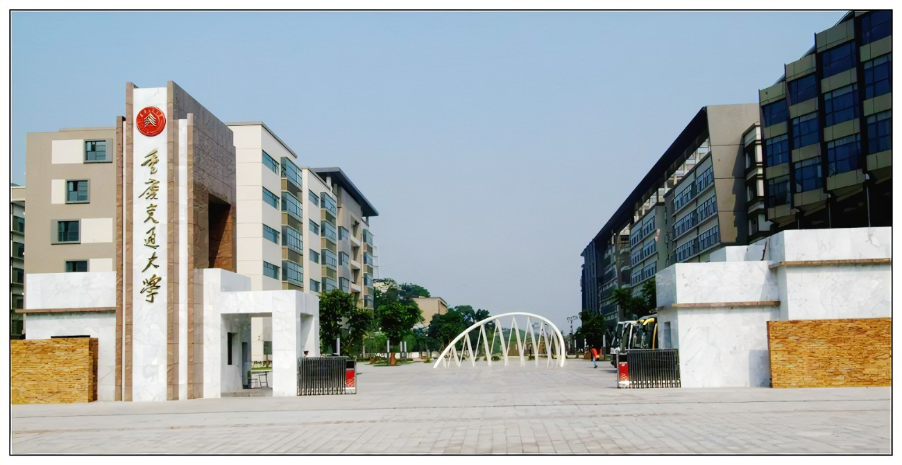

校训:明德行远 交通天下
重庆交通大学（Chongqing Jiaotong University，CQJTU），是由重庆市人民政府和中华人民共和国交通运输部共建的一所交通特色、以工为主的多科性大学，入选“中西部高校基础能力建设工程”、“卓越工程师教育培养计划”、国家级大学生创新创业训练计划、国家大学生文化素质教育基地、中国政府奖学金来华留学生接收院校、全国毕业生就业典型经验高校、全国创新创业典型经验高校，是教育部本科教学工作水平评估优秀学校、重庆市一流学科建设高校，为“一带一路”中波大学联盟发起成员、中俄交通大学联盟核心成员。
1951年，创建西南交通专科学校。1960年，组建重庆交通学院，成都工学院土木系、四川冶金学院冶金系、武汉水运学院水工系等相继并入。2000年，学校由交通部划转重庆市管理，为省部共建高校。2006年，更名为重庆交通大学，并增列为博士授予单位。
截至2022年7月，学校有南岸、科学城、大坪三个校区，占地约3000亩，校舍建筑面积85.58万平方米，固定资产总值37.19亿元，各类仪器设备总值7.74亿元，馆藏文献427.6万册，其中纸质文献222.9万册，电子图书204.7万册；设有20个学院（部），开办57个普通本科招生专业； [55] 拥有3个博士后科研流动站、4个一级学科博士学位授权点、16个二级学科博士学位授权点、18个一级学科硕士学位授权点、13个硕士专业学位授权类别；有全日制在校生3万余名，其中普通本科生2.4万余名，在校博硕士研究生6000余名，教职工约2200人，其中专任教师1500余人。
